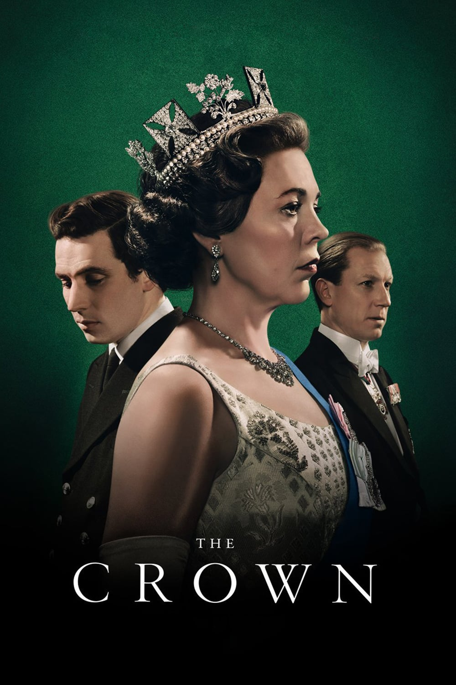

thaisgram
The Crown acompanha a rainha Elizabeth II e os primeiros-ministros que, juntos, deram forma à Grã-Bretanha depois da Segunda Guerra Mundial. A série narra as histórias internas dos dois famosos endereços do mundo: o palácio de Buckingham e Downing Street, incluindo as intrigas, romances e esquemas por trás dos eventos que moldaram a segunda metade do século 20.